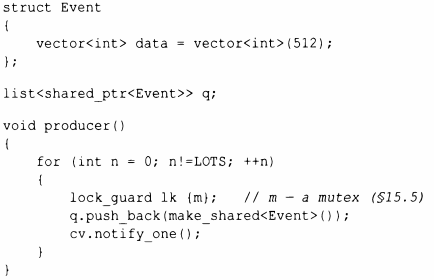
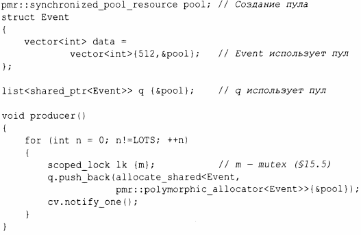

По умолчанию контейнеры стандартной библиотеки выделяют память с помощью new. Операторы new и delete предоставляют общую свободную память (также именуемую динамической памятью или кучей), которая может содержать объекты произвольного размера и со временем жизни, контролируемым пользователем. Это влечет определенные затраты времени и памяти, которые могут быть устранены во многих частных случаях. Поэтому контейнеры стандартной библиотеки предоставляют возможность устанавливать распределители памяти (аллокаторы) с определенной семантикой там, где это необходимо. Эта возможность использовалась для решения широкого спектра проблем, связанных с производительностью (например, аллокаторы, работающие с пулом), безопасностью (аллокаторы, очищающие память как часть процесса ее освобождения), распределением памяти по отдельности для каждого потока, и с неоднородными архитектурами памяти (выделение памяти в определенных хранилищах с соответствующими типами указателей). Эта книга - не место для обсуждения этих важных, но очень уж специализированных и зачастую очень сложных методов. Тем не менее я приведу один пример, связанный с реальной проблемой, для которой решением оказалось применение пула распределения.
Важная, с продолжительным временем работы система использовала очередь событий (см. § 15.6), используя векторы vector как события, которые передавались в виде shared_ptr. Таким образом, последний пользователь события неявно его удалял:
С точки зрения логики все хорошо и просто, код надежный и легко поддерживаемый. К сожалению, этот код привел к сильной фрагментации памяти. После прохождения 100 ООО событий от 16 производителей к 4 потребителям было потреблено более 6 Гбайт памяти.
Традиционное решение проблем фрагментации - переписать код с использованием аллокаторов пулов. Аллокатор пула - это распределитель, который управляет объектами единого фиксированного размера и выделяет пространство для множества объектов одновременно, а не использует отдельные выделения. К счастью, С++ 17 предлагает прямую поддержку этого решения. Распределитель пула определен в подпространстве имен pmr (polymorphic memory resource - полиморфный ресурс памяти) в std:
Теперь, после 100 000 событий, прошедших от 16 производителей к 4 потребителям, было использовано менее 3 Мбайт памяти - примерно 2000-кратное улучшение! Естественно, объем используемой памяти (в отличие от памяти, потраченной на фрагментацию) не изменяется. После устранения фрагментации использование памяти оставалось стабильным с течением времени, поэтому система могла работать месяцами.
Подобные методы применялись с хорошими результатами с первых дней С++, но обычно они требовали переписывания кода, чтобы он использовал специализированные контейнеры. Теперь стандартные контейнеры принимают аллокатор в качестве необязательного аргумента. По умолчанию же контейнеры используют new и delete.